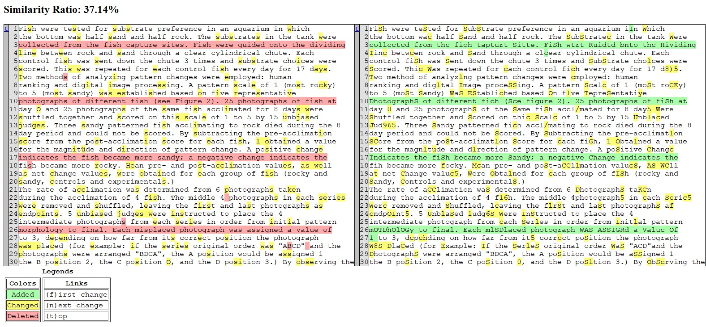
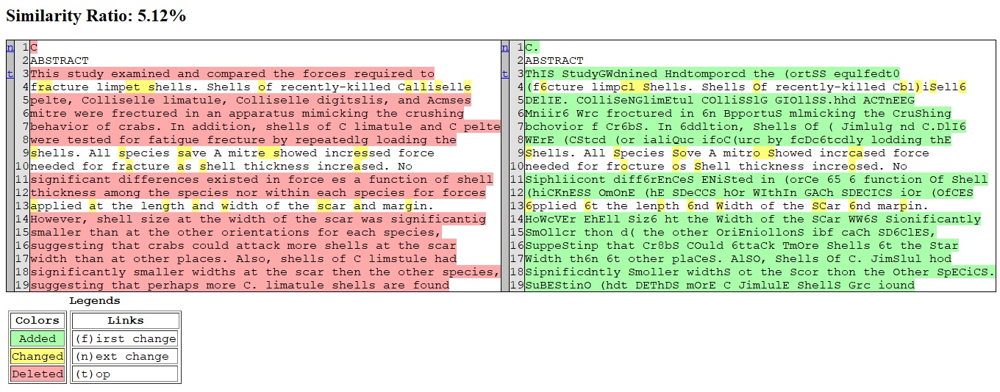
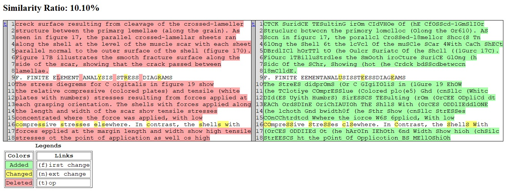
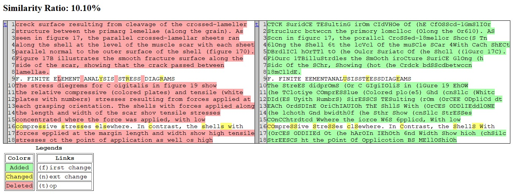
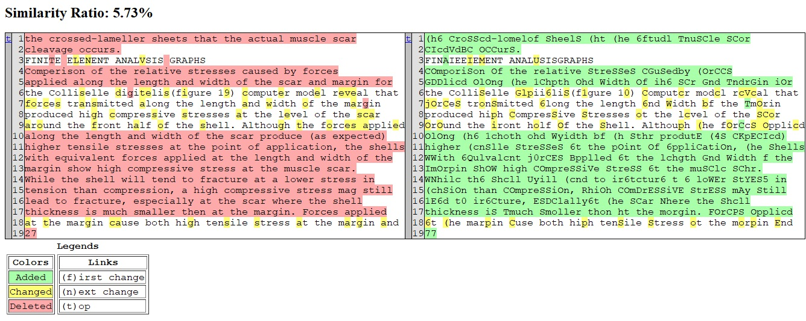
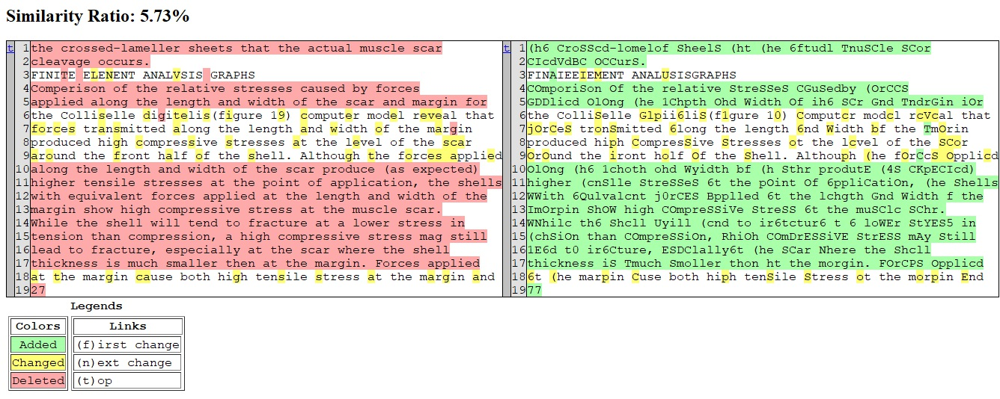
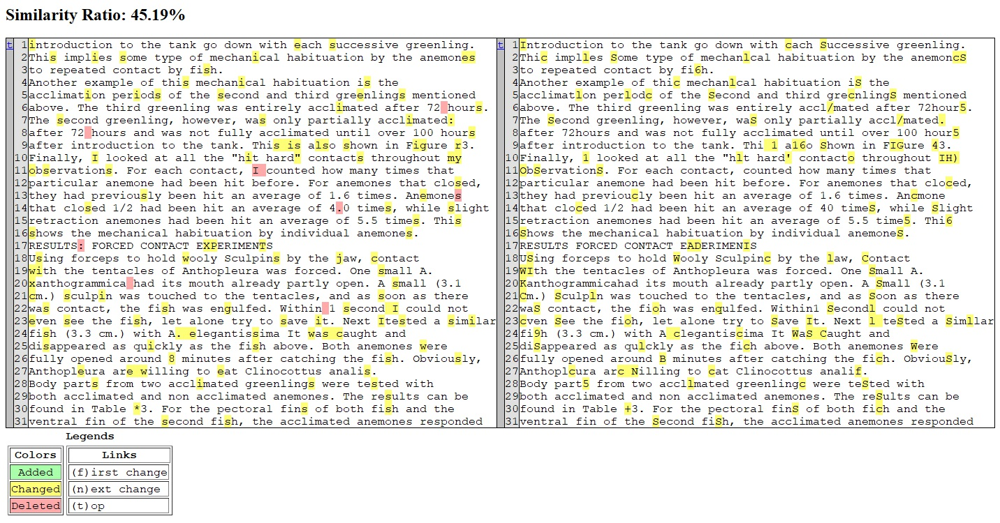
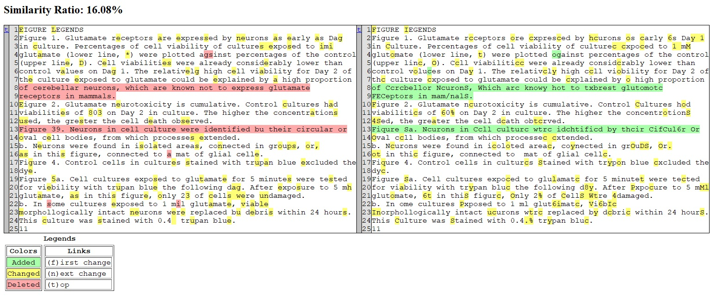
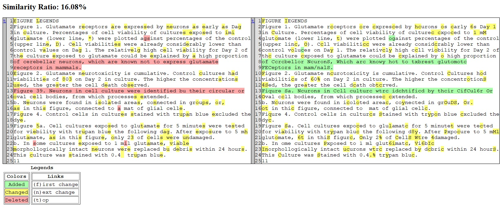

Text Difference Checker
Compare and Contrast Transkribus Outputs: Private model vs. Print 0.3 (Public) model
Motivation for Checker
We wanted to compare the outputs between our private model and Print 0.3 (public) model on Transkribus. Our private model was trained using 70 pages of student papers with the Print 0.3 as our base model. Consequently, our private model perform significantly worse than the Print 0.3M model.
Upon further research and guidance from Transkribus’s support team, our results was an example of overfitting. Overfitting is a common problem in machine learning where a model learns the details and noise in the training data to such an extent that it negatively impacts the performance of the model on new data. In essence, an overfitted model performs very well on training data but poorly on validation or test data.
As a result, the print 0.3 was deemed effective enough with an character error rate (CER) of 1.6%. CER measures the number of characters that were incorrectly predicted compared to the ground truth, normalized by the total number of characters in the ground truth.
Tools Used
- Python
- Difflib (comparing differences between sequences and calculating similarity)
- Jupyter Notebook
Compare Character sequences
SequenceMatcher is a class in difflib that can be used to compare the similarity between two sequences (such as strings). It uses the Ratcliff/Obershelp algorithm to calculate the similarity between two sequences.
Create a difference report
HtmlDiff is a class that can be used to create an HTML table, howing a side by side, line by line comparison of text with inter-line and intra-line change highlights.
Below is the gallery of text comparisons:
- Left: Print 0.3
- Right: Private model
bv172tc9618_0002
 
cp967xz4450
  
  

dr894zh9418

kr104zb7305


wp009br6936

 

yw206cp4709
zz472cp8582